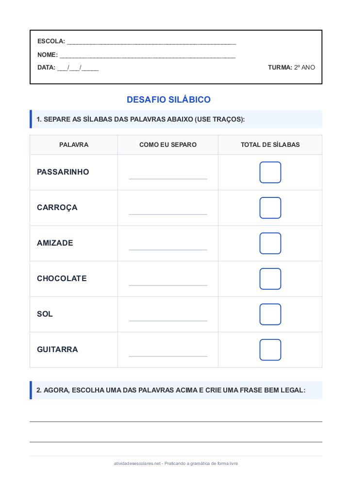

← Voltar ao Portal
ESCOLA:
_________________________________________________
NOME:
___________________________________________________
DATA:
___/___/_____
TURMA:
2º ANO
Atividade de Separacao Silabica – 2º Ano do Ensino Fundamental
1. SEPARE AS SÍLABAS DAS PALAVRAS ABAIXO (USE TRAÇOS):
PALAVRA
COMO EU SEPARO
TOTAL DE SÍLABAS
PASSARINHO
CARROÇA
AMIZADE
CHOCOLATE
SOL
GUITARRA
2. AGORA, ESCOLHA UMA DAS PALAVRAS ACIMA E CRIE UMA FRASE BEM LEGAL:
Visualização da Folha de Atividade
